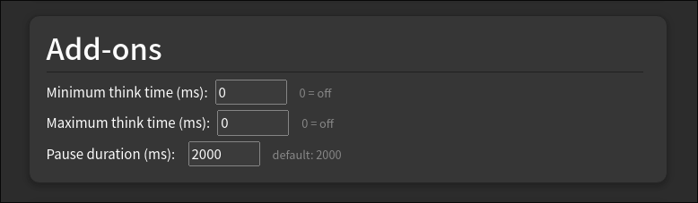

Reflect On Mee - Helps Alleviate RGS
Prevents Reflex Grading Syndrome (RGS) by enforcing a configurable pause before grading cards. When you reveal an answer too quickly (faster than your minimum think time), the grade buttons are hidden for a set duration — forcing you to reflect before responding.
Features
- Minimum think time — answer in under this (ms) and grading is blocked for the pause duration (0 = off)
- Maximum think time — think longer than this (ms) and you get a pause to absorb the material (0 = off)
- Pause duration — how long grading is blocked (ms)
- Per-deck configuration via Deck Options → Add-ons tab
- Option to apply to filtered decks in addon config

Installation
Download the .ankiaddon package from Releases and open it in Anki.
Source
github.com/Alexander-Nilsson/reflect-on-me
License
GNU GPL v3 or later.